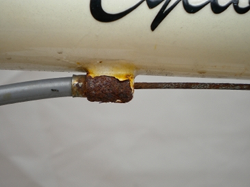

| Replace brake cable |
|
| Written by BikeFixer |
|
Steps 1. Remove cable2. Fit cable A good habit |
|
Buy kit?Tools you need for this fix. |
Ads. Selected by BikeFixer | |
 |
Buy Third Hand Tool |
 |
Rusted cables can suddenly snap when you most need them, so check and replace them in good time. The cable in the picture is corroding near a rusty boss - best replace it. Cables can rust inside kinked or split housing, so check there too |
||||
|

Rusty cables suddenly snap!! |
||||
About BikeFixerBikeFixer is a co-op of bikers and web designers.
|
||||
ReviewsGutter_Bunny_UK: Good cable cutters cut without fraying the cable. |
||||